Für Teams, die SUSE Harvester HCI betreiben
Eine moderne Konsole für alle Ihre Harvester-Cluster
harvester-ops bringt jeden Cluster in eine einzige Oberfläche, verwandelt lange Vorgänge in eine einzige nachverfolgte Aktion und führt ein Protokoll über alles, was geschieht, von Ihrer Konsole oder von überall sonst.
Open Source. Airgap-fähig. Fünf Sprachen. v1.86.0
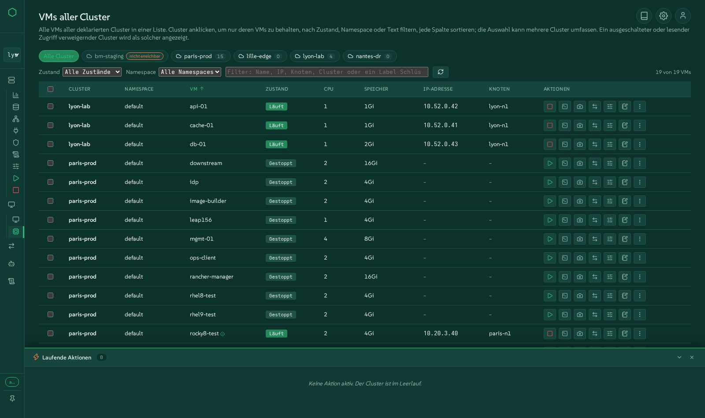
Jeder Cluster, eine Oberfläche
Deklarieren Sie so viele Harvester-Cluster, wie Sie betreiben. Mit einem Klick wechseln, jede VM jedes Clusters in einer Tabelle auflisten, sehen, welcher Cluster aus ist oder Sie abweist, ohne dass die anderen warten.
Automatisierung einfach gemacht
Geordnetes Herunterfahren und Starten, Upgrades, warme VMware-Migrationen, Kubernetes-Cluster, Bare-Metal-Installationen, Terraform: lange Vorgänge werden zu einer einzigen Aktion, mit denselben Skripten hinter dem Button und der Kommandozeile.
Jedes Ereignis nachverfolgt
Jede Aktion läuft als nachverfolgter Vorgang mit Live-Schritten, Protokollen und Verlauf ab. Änderungen, die außerhalb der Konsole vorgenommen wurden, in Harvester, kubectl oder Rancher, werden ebenfalls angezeigt.
Live erleben, im Browser
Die Demo ist die echte Oberfläche dieser Version, ausgeführt auf simulierten Clustern: fünf Cluster, VMs zum Starten und Stoppen, laufende VMware-Migrationen, ein Actions-Dock, das sich bewegt. Jede Aktion funktioniert, und nichts wird verändert.
Alles, was harvester-ops kann
Gruppiert so, wie Operatoren über ihre Arbeit denken. Jede Gruppe verlinkt auf den Demo-Bildschirm, auf dem Sie es ausprobieren können.
Alle Ihre Cluster an einem Ort
Eine einzige Konsole für eine Flotte von Harvester-Clustern, physisch oder verschachtelt, nah oder fern.
- Cluster über die Oberfläche oder die Konfigurationsdatei deklarieren; ein Clusterwechsel wechselt wirklich jede Ansicht.
- Alle VMs aller Cluster: jede VM jedes Clusters in einer Tabelle, filterbar nach Cluster, Status, Namespace oder Text, sortierbar nach jeder Spalte, mit Start, Stopp, Neustart, Migration und dem vollständigen Aktionsmenü für eine Auswahl, die über Cluster hinweggeht.
- Ausgeschaltete oder nicht erreichbare Cluster werden sofort als solche gemeldet, statt die Seite einfrieren zu lassen.
- Migrationen über alle Cluster hinweg in einer Tabelle oder auf einer gemeinsamen Zeitachse.
- Notizen zu Clustern, Knoten und VMs, von der Konsole verwaltet.
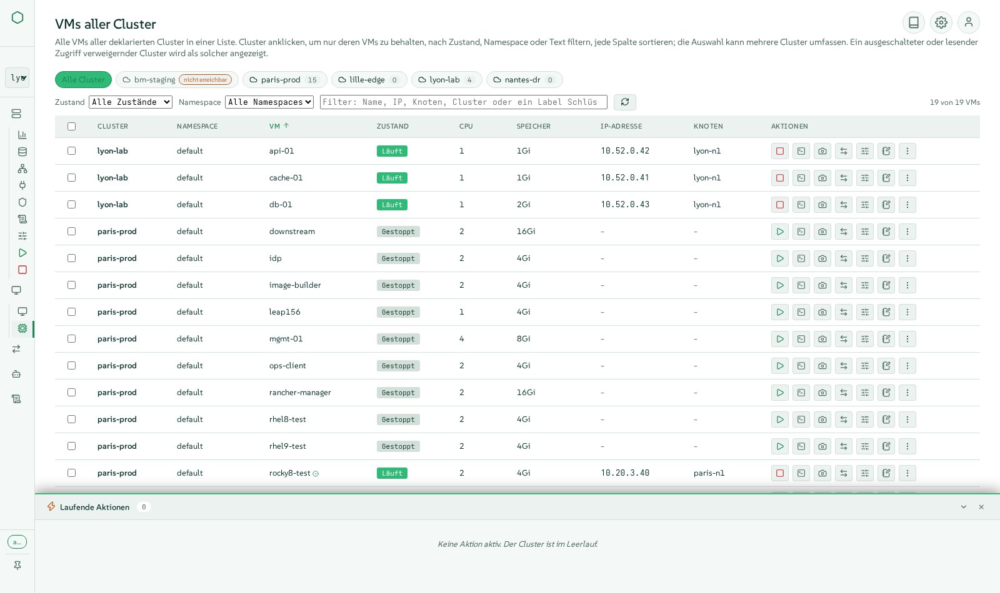
Virtuelle Maschinen, wie in Harvester und mehr
Alles, was Harvester für eine VM bietet, in modernen Fenstern, die nebeneinander offen bleiben.
- VMs erstellen mit Images, Vorlagen, cloud-init, Netzwerken, Festplatten und Platzierung, geprüft gegen den wirklich verfügbaren Speicherplatz.
- Das vollständige Aktionsmenü: Starten, Stoppen, Neustarten, Pausieren, Soft-Reboot, Klonen, Vorlage erstellen, YAML, Backups, Snapshots, Löschen mit seinen Volumes.
- Live-Änderungen: CPU- und Speicher-Hot-Plug, CD-ROM, Netzwerkkarten, Storage-Migration, Zugangsdaten.
- Eine VNC-Konsole, die mehrere Personen gleichzeitig teilen können, mit einer AZERTY-sicheren Tastatur, und eine serielle Konsole.
- Snapshots, Backups, Wiederherstellungen und ihre Zeitpläne; Live-Migration zwischen Knoten.
- Eine VM auf einen anderen Cluster verschieben, in ein Archiv exportieren, anderswo importieren, mit Rate, verbleibender Zeit und Geschwindigkeitskontrolle.
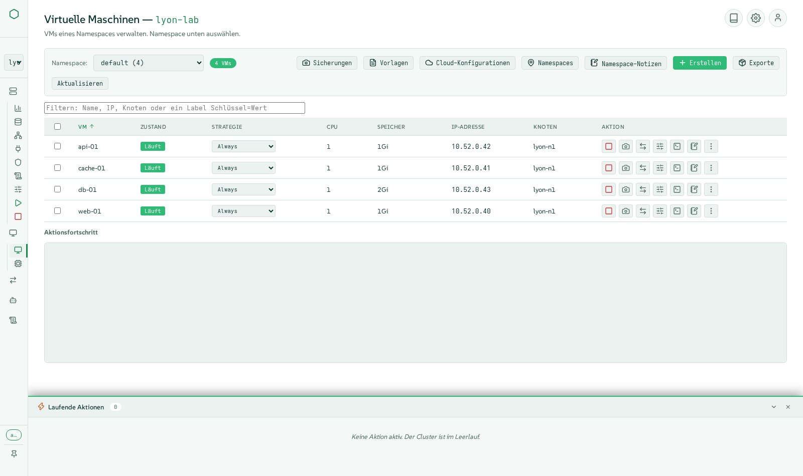
Den Cluster so sehen, wie er aufgebaut ist
Ansichten direkt aus dem laufenden Cluster, ein Block pro Objekt, im Geiste der VMware-Tools.
- Übersicht mit Metriken, einer Clusterkarte von Knoten und VMs, Ereignissen und Nutzungsanzeigen.
- Fabric-, Netzwerk- und Storage-Karten: ein Block pro Switch, Netzwerk, Volume und Festplatte.
- Der Netzwerkpfad einer VM, von ihrer Karte bis zum physischen Port.
- Hosts wie in Harvester: Festplatten, Tags, Huge Pages, KSM, CPU-Manager, Out-of-Band-Management über harvester-seeder, Wartungsmodus mit live verfolgtem Drain.
- Namespaces, Rancher-Projekte, Kontingente und Mitglieder.
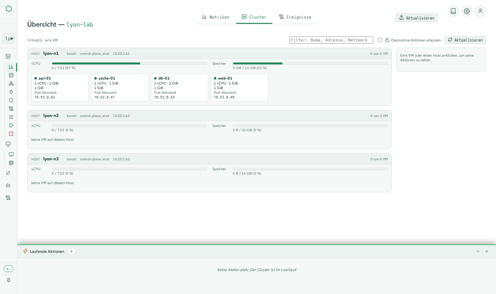
Storage, dem Sie vertrauen können
Longhorn und Images, erklärt statt nur aufgelistet.
- Volumes, Images, Storage-Klassen (einschließlich verschlüsselter), Snapshots und Backups, mit Erstellen, Bearbeiten und Löschen in Fenstern.
- Degradierte Volumes erklärt und sicher behoben: fehlende Replikate, nicht platzierte Replikate, laufende Rebuilds.
- Verfügbarer Speicherplatz berechnet, wie Longhorn entscheidet, sodass eine VM niemals dort geplant wird, wo sie nicht hinpasst.
- LVM-Storage und CDI-Image-Downloads, wo Harvester sie unterstützt.
- Einstellungen für das Backup-Ziel und Support-Bundles.
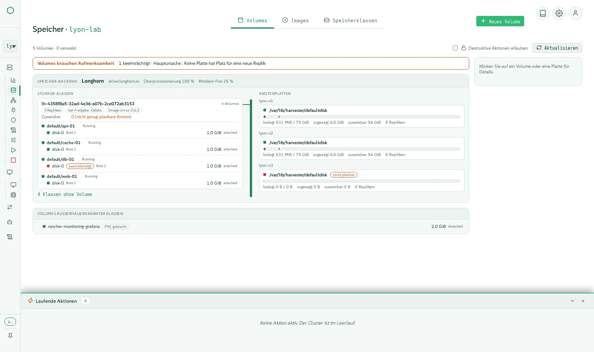
Netzwerke, Overlay und Underlay
Von VM-Netzwerken bis zu kube-ovn VPCs, mit Formularen und einem Live-Diagramm.
- VM-Netzwerke, Cluster-Netzwerke und ihre Konfigurationen, Load Balancer und IP-Pools, Host-Netzwerke.
- Storage-, Migrations- und RWX-Netzwerke an einer Stelle festgelegt.
- kube-ovn: VPCs, Subnetze, NAT-Gateways, Provider-Netzwerke, Netzwerkrichtlinien, Health.
- Statische IPs, die auf Overlay-Netzwerken wirklich angewendet werden.
- PCI-, USB- und SR-IOV-Geräte, die an VMs durchgereicht werden.
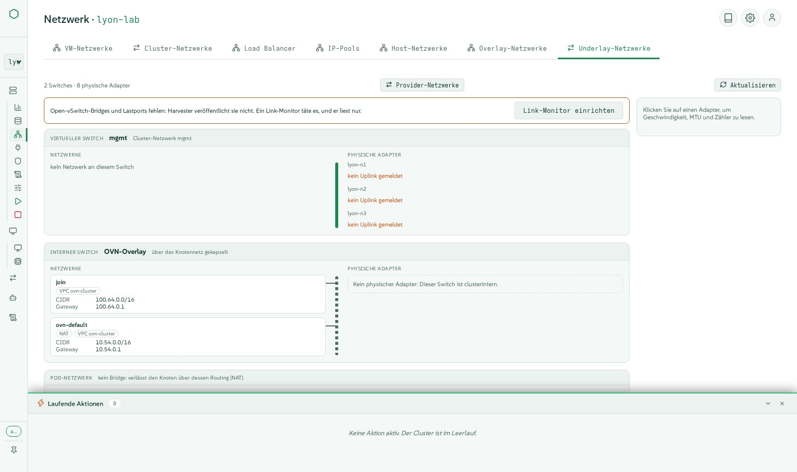
VMware verlassen, warm und sichtbar
Dutzende VMs von vCenter nach Harvester verschoben mit Forklift, mit der kürzestmöglichen Umschaltung.
- Forklift für Sie installiert, mit seinem VDDK-Image gebaut und in Ihre Registry gepusht.
- vCenter-Quellen deklariert, Inventar durchsucht, Wellen zusammengestellt mit Netzwerk- und Storage-Zuordnungen.
- Warme Migration: inkrementelle Kopien, während die VM weiterläuft, dann eine geplante oder sofortige Umschaltung.
- Wellen als Blöcke oder als Spuren auf einer Zeitachse, über alle Cluster hinweg.
- Rollback zur Quelle, das meldet, wann VMware die Quelle bei einer Rückfrage stoppt, und Prüfungen, die eine Welle ablehnen, deren MAC-Adresse schon vergeben ist.
- VM-Importe aus VMware, OpenStack oder einem OVA-Archiv.
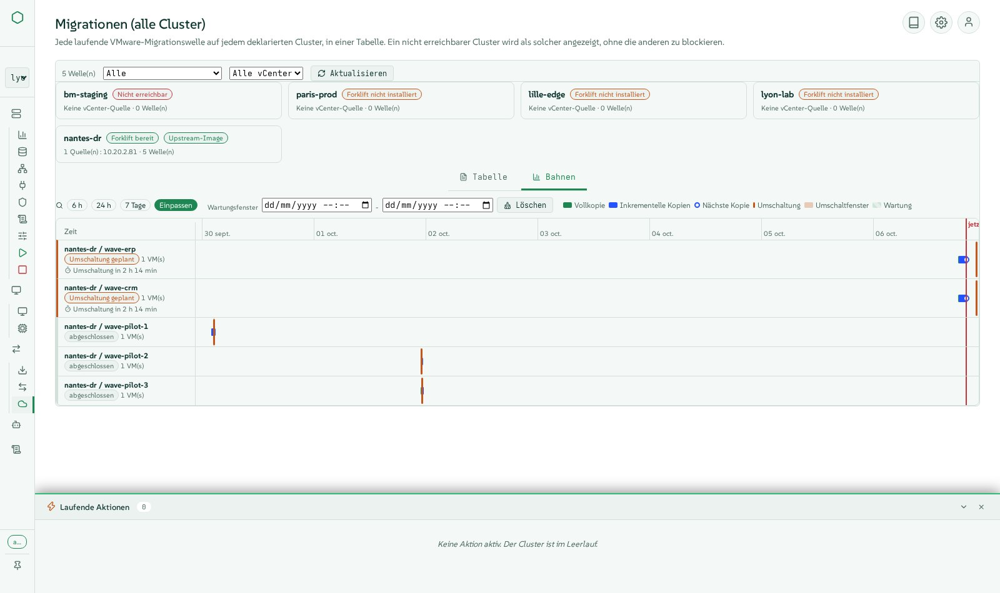
Cluster-Lebenszyklus ohne Stress
Die Vorgänge, die niemand um 2 Uhr nachts von Hand erledigen will.
- Geordnetes Herunterfahren in acht Schritten: Preflight, etcd-Snapshot, VM-Snapshots, geordnetes Stoppen der VMs, Storage-Wartung, Cordon, Worker, Control Plane.
- Start in fünf Schritten, Wake-on-LAN inklusive, nur die VMs neu startend, die das Herunterfahren gestoppt hat, in ihren Gruppen und ihrer Reihenfolge.
- VM-Gruppen, die nacheinander zwischen Gruppen und parallel innerhalb einer Gruppe stoppen und starten.
- Harvester-Upgrades von der Oberfläche aus, mit einem Airgap-ISO, wenn kein Internet vorhanden ist.
- Knotenwartung mit live verfolgtem Drain und erklärten Blockern.
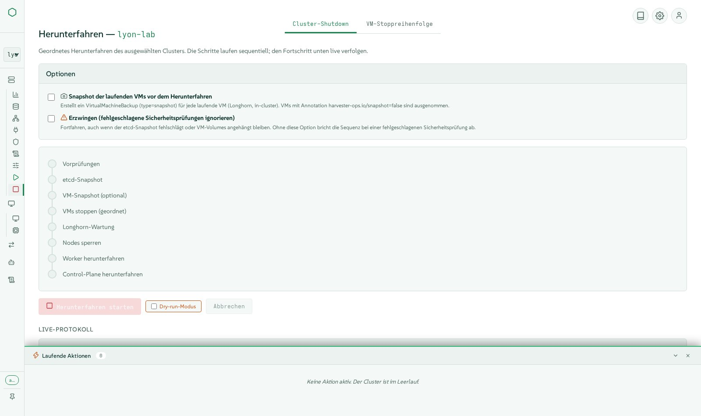
Infrastructure as Code und Bare Metal
Von leeren Servern zu Kubernetes-Clustern, aus einer Konsole.
- Bare-Metal-Installationen von Harvester per Redfish Virtual Media: Erkennung, Festplatten und Pools, Multi-Node-Profile, Installationen in Stapeln, der Cluster meldet sich von selbst an.
- Kubernetes-Cluster (RKE2) auf Harvester erstellt mit Cluster API, mit lastverteilten Diensten über CAAPH und kube-vip.
- Terraform-Deklarationen von der Konsole verwaltet, jeweils mit eigenem State, der Plan vor dem Anwenden gelesen; OpenTofu und der Harvester-Provider eingebettet.
- Monitoring und Logging: Prometheus-Metriken, Alarmregeln, Log-Flows und Outputs, mit den Konfigurationsprüfungen, die Harvester stillschweigend auslässt.
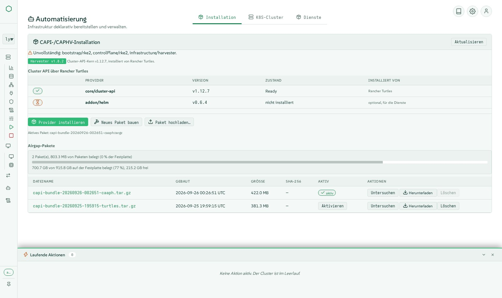
Jede Aktion nachverfolgt, jedes Ereignis sichtbar
Wissen, was passiert ist, wer es getan hat und wie es endete.
- Jede Aktion läuft als nachverfolgter Vorgang mit Live-Schritten im Actions-Dock ab, danach mit Protokollen und Verlauf im Activity-Tab.
- Änderungen, die außerhalb der Konsole vorgenommen wurden (Harvester-UI, kubectl, Rancher), werden erkannt und ebenfalls aufgeführt.
- Activity gefiltert nach Cluster, Status und Text; ein dauerhafter Verlauf der letzten Läufe mit ihren Protokollen.
- Cluster-Ereignisse und -Nutzung in der Übersicht; was der Cluster Ihnen verweigert hat, wird mitgeteilt, statt eine leere Ansicht zu zeigen.
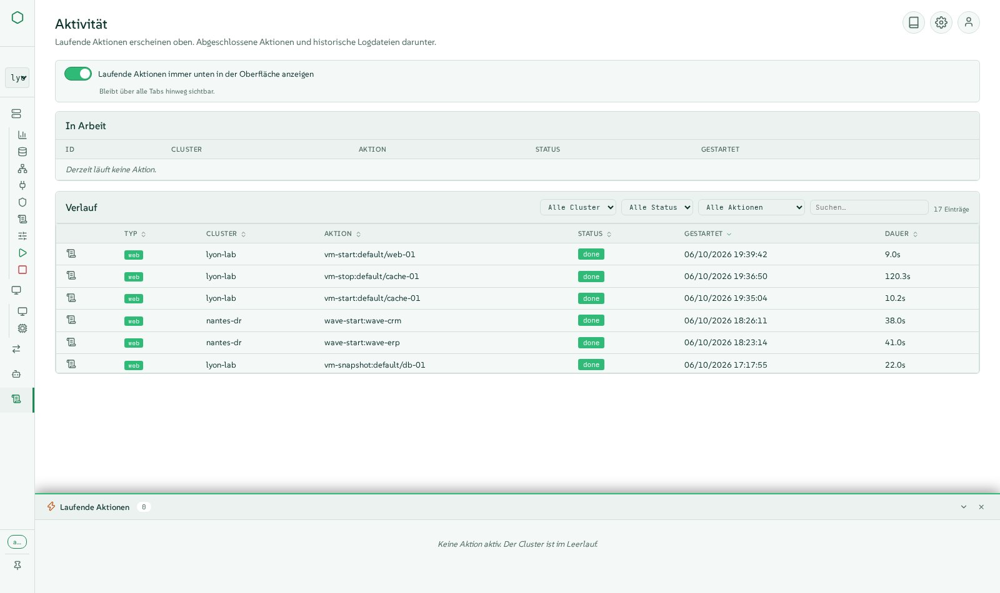
Standardmäßig sicher
Für Produktionsteams gebaut, mit geringsten Rechten überall.
- Die Anmeldung ist obligatorisch, mit Konsolenkonten und Rollen (Viewer, Operator, Admin).
- Single Sign-On über Rancher: Aktionen laufen mit den eigenen Rancher-Rechten der Person, nie mit einem gemeinsamen Admin-Konto.
- Identität an den Cluster delegiert durch Kubernetes-Impersonation, sodass das Cluster-RBAC für jede Person gilt.
- Rate Limits, validierte Eingaben, eingeschränkte Kubeconfigs, Secrets werden niemals ausgegeben.
- Secrets und SSH-Schlüssel des Clusters, verwaltet in typisierten Formularen.
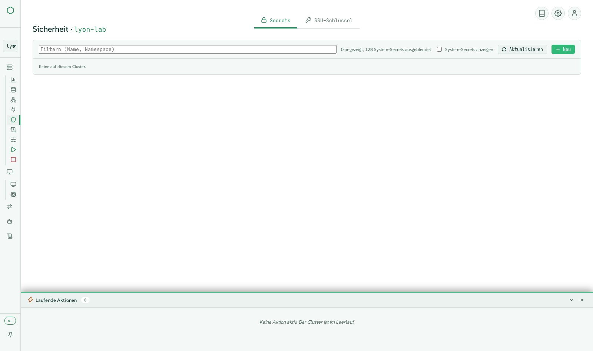
Bereit für die Produktion, auch offline
Ein signiertes Bundle, das sich ohne Internet selbst installiert und aktualisiert.
- Ein signiertes Tarball mit dem Container-Image, dem Cluster-API-Bundle, OpenTofu und dem Terraform-Provider: einsatzbereit an einem Airgap-Standort.
- Updates aus der Oberfläche, online oder aus einem hochgeladenen Archiv, Signatur geprüft, automatischer Rollback, wenn die neue Version nicht antwortet.
- Gemessen für große Flotten: geteilte Lesezugriffe und Worker-Prozesse, 60 Cluster bei etwa vier CPU-Kernen.
- Fünf Sprachen (Englisch, Französisch, Deutsch, Spanisch, Italienisch), fünf Themes in Dunkel und Hell, Tooltips überall, tastaturfreundlich.
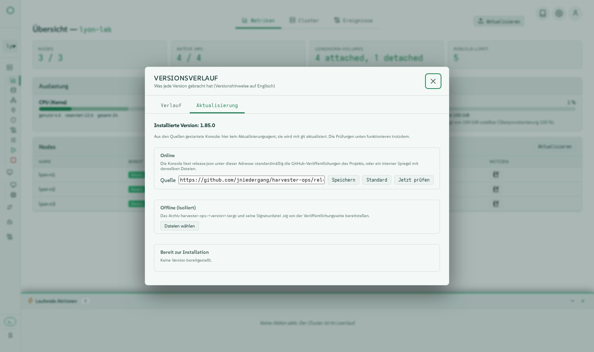
Mindestens alles, was die Harvester-UI kann
Jedes Menü von harvester-ops bietet mindestens die Funktionen der Harvester-1.9-Oberfläche, mit einer modernen Erfahrung obendrauf. Eine Paritätstabelle Funktion für Funktion wird mit jeder Version veröffentlicht.
Die Paritätstabelle lesenUnter der Haube
Ein kleiner, überprüfbarer Stack: kein JavaScript-Framework, kein Laufzeit-Download, jede Aktion ein Skript, das Sie selbst ausführen können.
Architektur
Browser
Vanilla-JavaScript-Module, Server-Sent Events für Live-Schritte, WebSockets für Konsolen.
Konsole
Flask-Anwendung, die die Oberfläche und eine REST-API bereitstellt, mit Anmeldung, Rollen, Rate Limits und einer Actions-Engine (SQLite im WAL-Modus).
Skripte
Jede Operation ist ein Bash- oder Python-Skript unter bin/, das von der Konsole als nachverfolgte Aktion ausgeführt wird und auch allein von der Kommandozeile nutzbar ist.
Cluster
Direkt über die Kubernetes-API gelesen (gepoolte Verbindungen, geteilte Lesezugriffe, Worker-Prozesse) oder über kubectl; handelt mit der Identität der Person.
Entwurfsprinzipien
- Kommandozeile und Oberfläche sind gleichwertig: Die Oberfläche umgeht die Skripte niemals.
- Jede verändernde Aktion ist eine nachverfolgte Aktion, live sichtbar und im Verlauf aufbewahrt.
- Airgap zuerst: kein Netzwerkzugriff zur Laufzeit nötig, alles ist im Bundle enthalten.
- Geringste Rechte: Der Cluster sieht die Person, nicht die Konsole.
- Vor jeder Version echt auf Harvester-Clustern getestet, nicht nur in Unit-Tests.
Technologien und Versionen
Direkt aus der Version ausgelesen, zum Zeitpunkt, als diese Seite erstellt wurde. (v1.86.0)
Laufzeit
| Komponente | Version | Rolle |
|---|---|---|
| Python | 3.11 | Sprache der Konsole und ihrer Werkzeuge |
| SUSE BCI Python image | registry.suse.com/bci/python:3.11 | Basis des Container-Images |
| SQLite | WAL | Aktionsverlauf und Notizen, ohne Datenbankserver |
Python-Bibliotheken
| Komponente | Version | Rolle |
|---|---|---|
| bcrypt | 3.2.2 | Backend für Passwort-Hashes |
| flask | 3.0.3 | Web-Framework der Konsole |
| flask-limiter | 4.1.1 | Ratenbegrenzung auf jedem ändernden Endpunkt |
| flask-sock | 0.7.0 | WebSockets der VNC- und seriellen Konsolen |
| itsdangerous | 2.2.0 | signierte Sitzungscookies |
| jinja2 | 3.1.6 | Seitenvorlagen |
| markdown | 3.6 | Darstellung von Versionshinweisen und Dokumentation |
| passlib | 1.7.4 | Passwort-Hashes der Konsolenkonten |
| prometheus-client | 0.25.0 | Metrik-Endpunkt |
| pyyaml | 6.0.2 | Konfiguration und Kubernetes-Manifeste |
| werkzeug | 3.1.8 | WSGI-Werkzeugkasten unter Flask |
| y-py | 0.6.2 | gemeinsames Bearbeiten von Notizen |
Eingebettete Browser-Bibliotheken
| Komponente | Version | Rolle |
|---|---|---|
| Lucide icons | 1.44.0 | der monochrome Icon-Satz |
| xterm.js | 5.5.0 | serielle Konsole der VMs |
| noVNC | 1.7.0 | grafische Konsole der VMs, von mehreren Personen gemeinsam genutzt |
| Tiptap | embedded | Notizen in Rich Text |
| Yjs | 13.6.20 | gemeinsame Notizen in Echtzeit |
Werkzeuge im Image
| Komponente | Version | Rolle |
|---|---|---|
| kubectl | v1.30.5 | Kubernetes-Client, Rückfallebene der direkten API-Lesezugriffe |
| yq | v4.44.3 | YAML-Verarbeitung in den Skripten |
| OpenTofu | 1.12.6 | wendet Terraform-Deklarationen an (MPL-2.0) |
| xorriso | openSUSE package | Remastering der Harvester-ISO für Bare Metal |
| OpenSSH client | openSUSE package | Zugriff auf die Knoten für Herunterfahren und Start |
| terraform-provider-harvester | 1.9.0 | Harvester-Ressourcen in Terraform-Deklarationen |
Cluster-API-Bundle
| Komponente | Version | Rolle |
|---|---|---|
| cluster-api | v1.10.4 | Cluster-API-Komponente |
| cabp-rke2 | v0.16.1 | Cluster-API-Komponente |
| cacp-rke2 | v0.16.1 | Cluster-API-Komponente |
| caphv | v0.2.8 | Cluster-API-Komponente |
| cert-manager | v1.16.2 | Cluster-API-Komponente |
| caphv-clusterclass | v0.2.8 | Cluster-API-Komponente |
| turtles-rke2-bootstrap | v0.25.2 | Cluster-API-Komponente |
| turtles-rke2-control-plane | v0.25.2 | Cluster-API-Komponente |
| turtles-caphv | v0.10.1 | Cluster-API-Komponente |
| turtles-caaph | v0.6.4 | Cluster-API-Komponente |
Harvester
| Komponente | Version | Rolle |
|---|---|---|
| Harvester HCI | v1.7.x, v1.8.x, v1.9.x | betriebene Cluster (real getestet mit v1.8 und v1.9) |
| Forklift | v1.8.2 images | Warm-Migrationen von VMware |
| Rancher | 2.14 | Single Sign-On und geerbte Rechte (OIDC-Anbieter) |
In Minuten installiert
Laden Sie das signierte Bundle von den GitHub-Releases herunter, prüfen Sie es, führen Sie den Installer aus. Er stellt die wenigen nötigen Fragen, einschließlich Ihrer eigenen Zertifikate, falls gewünscht.
- 1Release und Signatur herunterladen
- 2Prüfsumme verifizieren
- 3Installer als root ausführen
- 4Konsole öffnen und anmelden
V=1.86.0
curl -LO https://github.com/jniedergang/harvester-ops/releases/download/v$V/harvester-ops-$V.tar.gz
curl -LO https://github.com/jniedergang/harvester-ops/releases/download/v$V/harvester-ops-$V.tar.gz.sha256
curl -LO https://github.com/jniedergang/harvester-ops/releases/download/v$V/harvester-ops-$V.tar.gz.sig
sha256sum -c harvester-ops-$V.tar.gz.sha256
tar xzf harvester-ops-$V.tar.gz && cd harvester-ops-$V
sudo ./install.shBenötigt einen Linux-Host mit Podman und systemd sowie Zugriff auf die Kubernetes-API Ihrer Cluster.
Zusehen, wie es funktioniert
Kurze untertitelte Clips, gefilmt auf echten Clustern, in Englisch und Französisch.
Videos auf GitHub ansehen